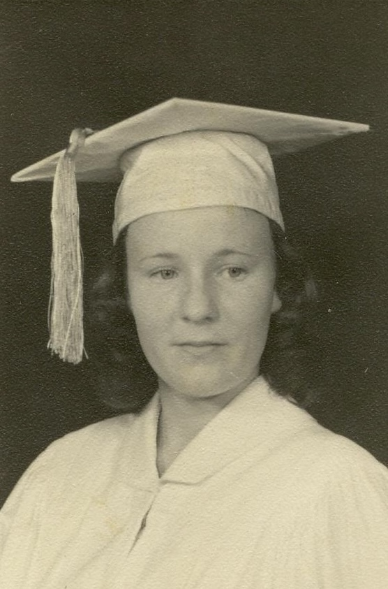

Deloris Herrin
Born 1942

Life Events
Born: 1942 — Lafayette County, Florida, United States
Family
Father: William Levi Herrin Sr.
Mother: Laura Etta Palmer
Siblings
Military Service
No military service information has been added.
Biography
Deloris Herrin was born in 1942 in Lafayette County, Florida. She is a daughter of William Levi Herrin and Laura Etta Palmer.
Photos
No additional photographs have been added.
Sources
-
1950 United States Census — William Levi Herrin Household
Type: Census1950 United States Census recording William and Laura Etta Herrin and five of their children in Lafayette County, Florida. William was still working as a farmer.
Location: Lafayette, Florida, United States
Household: William L. Herrin Household
Household Members:
- William L. Herrin, head, age 58
- Laura E. Herrin, wife, age 55
- Dorothy Herrin, daughter, age 20
- Billy Herrin, son, age 17
- Evelyn Herrin, daughter, age 16
- Shelby J. Herrin, daughter, age 11
- Deloris Herrin, daughter, age 7
Supports: William Levi Herrin and Laura Etta Palmer residing in Lafayette County, Florida in 1950, William Levi Herrin working as a farmer, Dorothy, Billy, Evelyn, Shelby Jean, and Deloris residing with their parents, Deloris Herrin recorded as born in Florida